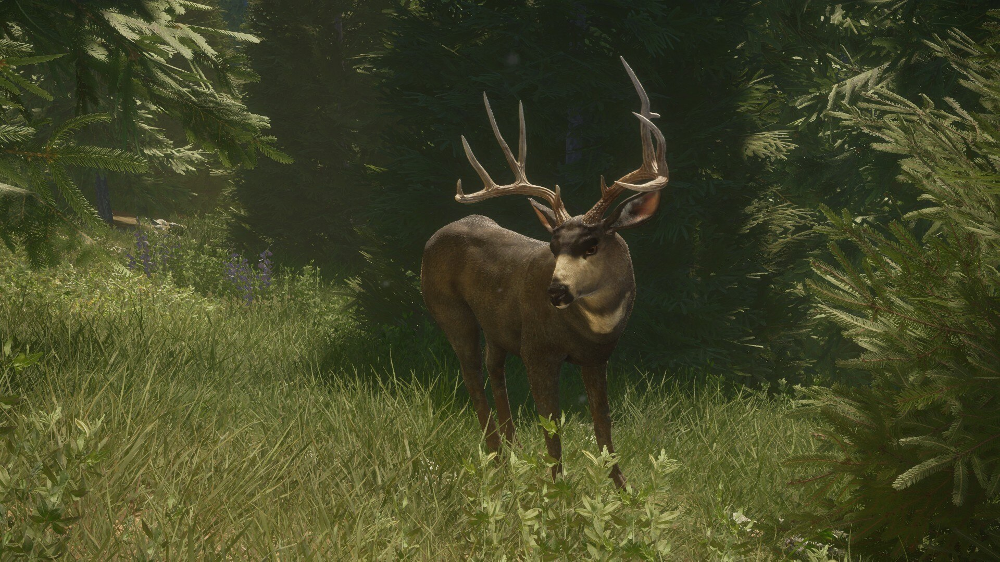
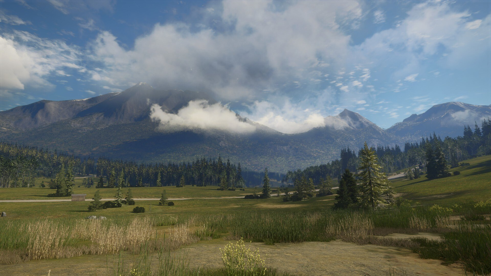
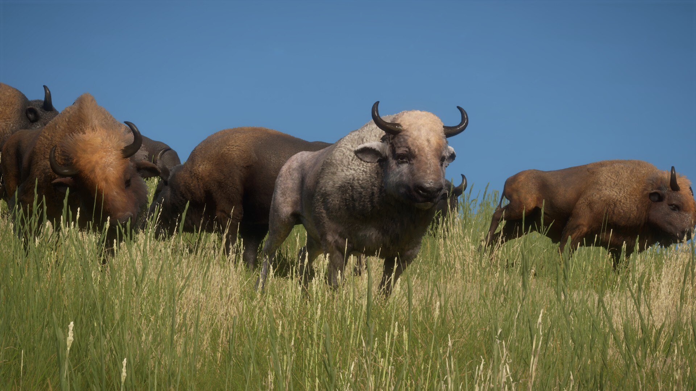

.jpeg)
In the vast digital landscapes of theHunter: Call of the Wild, one reserve stands out as a true gem , Silver Ridge Peaks. As an avid player and hunting enthusiast, I've found myself repeatedly drawn to the rugged beauty and unique challenges that this reserve offers
Silver Ridge Peaks has often been praised for its stunning visuals and realistic representation of a North American hunting reserve. Players may appreciate the attention to detail in the landscape, wildlife, and overall ambiance, which contributes to a more immersive gaming experience.
The challenging terrain of Silver Ridge Peaks, while loved by some for the added difficulty it brings to the game, may be seen as a point of contention for others. Some players enjoy the extra challenge of navigating the rugged environment, while others may find it more frustrating.
The majestic Rocky Mountain Elk is one of the flagship species on Silver Ridge Peaks. Their impressive antlers and challenging behavior make them a popular target for many hunters. You can find them in various habitats across the reserve, including the dense forests and open meadows.
Hunting Plains Bison on Silver Ridge Peaks in theHunter: Call of the Wild can be a rewarding but challenging experience. Plains Bison are known for their size and strength, and tracking and taking down one of these majestic creatures requires careful planning and execution.Plains Bison in Silver Ridge Peaks are typically found in open grasslands and meadows. Understanding their preferred habitats will increase your chances of encountering them
Hunting Mountain Lions, or cougars, on Silver Ridge Peaks in theHunter: Call of the Wild can be an exhilarating experience. Mountain Lions are stealthy predators, and tracking and taking one down require a combination of skill, strategy, and patience. Mountain Lions have a keen sense of smell, so it's crucial to pay attention to the wind direction.Since Mountain Lions are elusive and stealthy, you'll need to be extremely observant. Use your binoculars and spotting scope to scan the environment for any movement
Hunting Plains Bison in theHunter: Call of the Wild is an exhilarating and deeply satisfying experience that never fails to captivate me. The vast landscapes of Silver Ridge Peaks provide the perfect backdrop for the pursuit of these magnificent creatures. Tracking through open grasslands and navigating the challenging terrain adds an element of realism that keeps me on the edge of my seat. The sheer size and strength of Plains Bison demand a strategic approach, and each encounter becomes a test of patience and skill. Spotting a herd in the distance, carefully planning my approach, and executing a well-placed shot with a powerful rifle are moments that define the thrill of the hunt. Beyond the adrenaline rush, there's a profound appreciation for the realism and authenticity that the game brings to the hunting experience, making every expedition in pursuit of Plains Bison a truly immersive and rewarding adventure.
